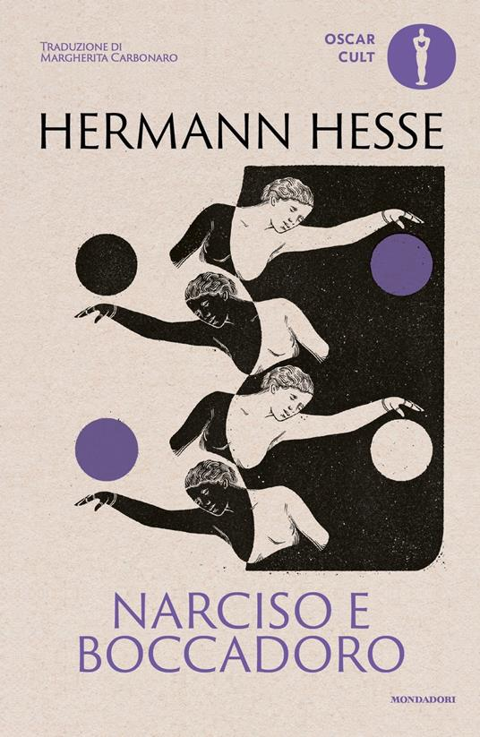

Il tuo diario di lettura
Tieni traccia dei tuoi libri, delle letture in corso e di quelle che sogni.
✿ La tua libreria
✿ Le tue recensioni
✿ Libro del mese
Narciso e Boccadoro · Hermann Hesse

Nell'abbazia di Mariabronn arriva un giorno un nuovo allievo, Boccadoro. Suo padre desidera che lì completi gli studi e che lì rimanga consacrando la vita a Dio per espiare un misterioso peccato legato alla sua nascita. Tra gli antichi chiostri e le ampie sale del monastero, il biondo Boccadoro, sensuale e sognatore, si lega di profonda amicizia col giovane insegnante Narciso, l'erudito, il prodigio delle scienze e delle lettere. Narciso è tutto spirito, destinato a una brillante carriera religiosa al riparo dalle insidie del mondo e della storia; Boccadoro invece è un 'Wanderer', un viandante, un senza casa. Tentato dall'infinita ricchezza della vita e segretamente innamorato anche della sua caducità, diventerà un artista geniale senza mai smettere di vagabondare per il mondo in cerca di risposte alle sue inquietudini. Ambientando "Narciso e Boccadoro" nel Medioevo leggendario del cattolicesimo monastico, Hermann Hesse ha modo di riflettere sul tema, centrale nella sua poetica, del contrasto fra natura e spirito, fra eros e logos, fra arte e ascesi, alla ricerca di una loro possibile integrazione. Questo romanzo, vera e propria "biografia di un'anima", pone così al lettore – in un'accattivante, limpida fusione di favola simbolica e romanzo picaresco perfettamente resa dalla nuova traduzione di Margherita Carbonaro – i grandi interrogativi sulla condizione dell'uomo contemporaneo.